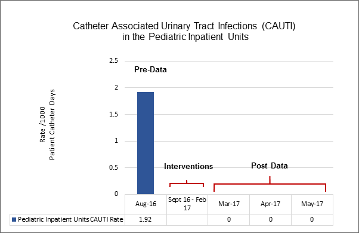

EP21EO
Culture of Safety EP21EO
Nurses are involved in implementing and evaluating national or international patient safety goals.
- Provide one example, with supporting evidence, of nurses' involvement in activities that address national or international patient safety goals that led to an improvement in patient safety outcomes. Supporting evidence must be submitted in the form of a graph with a data table the clearly displays the data.
EP21EO
Appraisers Feedback:
A goal that describes nurses’ involvement in activities that address national or international patient safety goals that led to an improvement in patient safety outcomes. Note: The stated goal does not represent an outcome resulting from nurses’ involvement in activities that address national or international patient safety goals that led to an improvement in patient safety outcomes; rather it represents adherence to process compliance. Provide the outcome measure from the improvement of nurses’ involvement in activities that address national or international patient safety goals that led to an improvement in patient safety outcomes.
Evidence (data) that demonstrates an improvement in activities that address national or international patient safety goals that led to an improvement in patient safety outcomes. Note: The data does not represent an outcome data; it represents adherence to process compliance. Provide the outcome data from the improvement in activities that address national or international patient safety goals that led to an improvement in patient safety outcomes an identified healthcare need.
Texas Children's Hospital:
Please see below a newly written narrative and evidence for EP21EO that supports nurses’ involvement in activities that address national patient safety goals that led to an improvement in patient safety outcomes.
Improving Patient Safety by Nurses Addressing The Joint Commission’s 2012 National Patient Safety Goal (07.06.01) leading to a Reduction in Catheter-Associated Urinary Tract Infection Rates (CAUTI) for Pediatric Inpatients
Background/Problem
In 2012, Texas Children’s Hospital (TCH) joined the Solutions for Patient Safety Group (SPS), a network including 80+ children’s hospitals nationwide, who partner to develop and implement effective prevention standards while creating a high reliability culture and partnering with patients and families, network hospitals are working to achieve specific goals. The SPS network supports participating hospitals on their journey toward zero harm by providing frequent training and learning opportunities, tools, data collection and analysis, opportunities to collaborate, and much more.
When TCH joined the SPS, there were several areas of focus including CAUTI. TCH formed the Catheter-Associated Urinary Tract Infection Cohort to focus on the prevention of CAUTI. The group consisted of nursing, physicians, and infection control from the areas of the hospital with the highest indwelling urinary catheters.
In 2012, The Joint Commission (JC) released a National Patient Safety Goal (NPSG) to Prevent CAUTI:
NPSG-Prevent CAUTI
NPSG.07.06.01- Prevent indwelling Catheter Associated Urinary Tract Infections:
Manage indwelling urinary catheters according to established evidence-based guidelines that address the following:
- Secure catheters for unobstructed urine flow and drainage
- Maintain sterility of the urine collection system
- Replace the urine collection system when required
- Collect urine samples with aseptic technique
In alignment with The Joint Commission 2012 NPSG Prevent CAUTI, in September 2012, the Catheter-Associated Urinary Tract Infection Cohort implemented the CAUTI Bundle which included the following elements:
- Necessity of the catheter
- Pericare performed and documented at least once per shift
- Drainage bag maintained below the bladder
- Maintain less than 1,000 mL in the collection bag at one time
- Catheter securement
These bundle elements were developed from evidence based practice based on recommendations from Solutions for Patient Safety Group as well as the NPSG from The Joint Commission.
In October 2013, the TCH CAUTI Cohort identified key drivers and interventions that pertained to the high-risk bundle elements of pericare and securement. A securement device was chosen and videos were made to reinforce proper insertion and care techniques.
In 2015, The Joint Commission released additional elements for NPSG.07.06.01 which states: “Monitor compliance with evidenced based guidelines or best practices”, referring to using guidelines for the prevention of catheter-associated urinary tract infections (CAUTI). In August 2016, the Pediatric inpatient CAUTI rate increased from 0.5 CAUTIs/1,000 device days to 1.92 CAUTIs/1,000 device days. The TCH CAUTI cohort examined this goal and reexamined the Cohort focus on the individual bundle elements and increasing compliance with the bundle.
Goal Statement
Decrease the Pediatric Inpatient CAUTI rate. The rate is calculated by the number of CAUTIs per month divided by the sum of the number of days indwelling catheters are in place per month multiplied by 1,000.
Description of the Intervention/Initiative/Activities
The intervention period was September 2016 through February 2017.
September 2016
In September 2016, the TCH CAUTI Cohort identified commonalities among the infections. Many of the infections related back to long periods of time that catheters were in place. The TCH CAUTI Cohort assessed current practices and determined the duration of the catheter was not being successfully addressed as well as pericare consistently being performed every shift.
Catheter Removal Best Practice Alert
The TCH CAUTI Cohort examined their key driver diagram to identify which of the bundle elements had not yet been addressed. According to the CAUTI bundle, which is based on the NPSG and SPS elements, the catheter is to be reviewed for necessity daily. Current practice at TCH was that the necessity of the catheter was documented by clinical nurses every shift. The nurses felt that the ownership should fall with the provider.
The TCH CAUTI Cohort identified that the provider should decide if the catheter needed to remain in place and developed a best practice alert in conjunction with several clinical nurses. The best practice alert pops up when the provider logs into the patient’s electronic medical record when the catheter has been in place for three days (72 hours). This timeframe is based on evidence-based practice that infection risk tends to increase significantly past this timeframe. The best practice alert asks the provider if they would like the patient to continue to have the catheter in place or if they would like to discontinue it. If they choose discontinue, it navigates the provider to the order for discontinuation. If they would like to continue with the catheter, it prompts the provider to choose a reason for continuation. The best practice alert will then pop up again at a certain time interval based upon the reason given.
Education was provided to providers and clinical nurses through shared governance councils, staff meetings, and physician meetings. An email was disseminated to reinforce the best practice alert. At the end of September 2016, the best practice alert was implemented organization-wide.
Worklist
The TCH CAUTI Cohort determined that a reminder for pericare for clinical nurses would increase compliance with the evidence based bundle element as this is the nursing responsibility. A worklist in the electronic medical record was developed by the TCH CAUTI Cohort for clinical nurses to utilize as a checklist/reminder when documenting items related to hospital-acquired conditions. The worklist was vetted through several staff nurse groups seeking feedback and revisions. This list is linked to certain flowsheet rows in the electronic medical record. The pericare item is triggered by the catheter being added as a line or tube for the patient. The clinical nurse can either document from the list or flowsheet to have the item removed from their worklist and it renews every 12 hours for the next shift. A resurgence of the project with more user-friendly features and relaunch for all areas following targeted education occurred at the end of September 2016.
October 2016 - February 2017
Bag Placement Education
In October 2016, the TCH CAUTI Cohort evaluated the placement of the urinary catheter bag below the bladder with the evidence based bundle element. The goal was to prevent kinks in the catheter and drainage tubing as well as prevention of reflux of urine back into the bladder. The TCH CAUTI Cohort developed an educational flyer with pictures and captions depicting steps for proper placement of the bag. In November 2016, the education was presented at shared governance councils, staff meetings, and disseminated through emails.
House-Wide Audits
In December 2016, the TCH CAUTI Cohort met with nurse leaders to determine the best method for data collection related to the new practices implemented to improve bundle compliance. For monitoring bundle compliance, the TCH CAUTI Cohort and nurse leaders decided house-wide data collection was warranted. Bundle compliance monitoring began in January 2017.
Family Education
In February 2017, the TCH CAUTI Cohort recognized the lack of family involvement as well as family education in prevention of CAUTI. The TCH CAUTI Cohort discovered that Bard Medical urinary catheter distributor for Texas Children’s Hospital provides patient/family educational materials in English and Spanish. The TCH CAUTI Cohort approved the urinary catheter education content, in collaboration with the Urology department and Patient and Family Services reviewed the educational materials for content and language level. The patient/family education was presented in unit staff meetings and discussed with families when urinary catheters are ordered. Flyers were distributed to clinical nurses as reminders for patient/family education. The patient/family urinary catheter education was uploaded to the electronic patient education site.
Participants
TCH Catheter-Associated Urinary Tract Infection (CAUTI) Cohort
|
|||
Name |
Discipline |
Title/Role |
Department |
Kristi Laird, BSN, RN |
Nursing |
Clinical Nurse |
Acute Care |
Christa Lloyd, BSN, RN, CPN |
Nursing |
Patient Care Manager |
Acute Care |
Gail Parazynski, MSN, RN, NEA-BC |
Nursing |
Assistant Vice President Nursing-Critical Care/Executive Sponsor for CAUTI |
Critical Care |
Tarra Kerr MSN, RN, NEA-BC |
Nursing |
Director Nursing/ Operational Lead for CAUTI |
Cardiology |
Joellan Mullen, MSN, RN, CCRN-K |
Nursing |
Clinical Specialist/ Clinical Lead for CAUTI |
Progressive Care Unit |
Angela Morgan, MS, RN, CCRN |
Nursing |
Clinical Specialist |
Pediatric Intensive Care Unit |
Susan Engleman, MSN, RN, CPNP, AC, PNP, BC |
Nursing |
Clinical Specialist |
West Campus |
Miranda Rodrigues, MSN, RN, CNL |
Nursing |
Clinical Specialist |
Cardiology |
Judith Campbell, MD |
Medicine |
Physician |
Infectious Diseases |
Matthew Musick, MD |
Medicine |
Physician/Medical Director/ Medical Lead for CAUTI |
Critical Care Medicine |
Matthew Pesek, MD |
Medicine |
Physician |
Critical Care Medicine |
Lea Fasciano, MT (ASCP), CIC |
Infection Control |
Infection Control Coordinator |
Infection Control |
Katie Jones, MPH, CIC |
Infection Control |
Infection Control Coordinator |
Infection Control |
Amy Jeppesen, BSN, RN |
Nursing |
Senior System Analyst |
EPIC, Information Services |
Ricardo Brillantes, BSN, RN |
Nursing |
Senior System Analyst |
EPIC, Information Services |
EP21EO, Participants
Outcomes
Clinical nurses’ participation in the TCH CAUTI Cohort and implementation of best practices that align with The Joint Commission’s 2015 National Patient Safety Goal 07.06.01 resulted in a decrease in the inpatient pediatric CAUTI rate. The Inpatient Pediatric CAUTI rate, prior to the intervention, was 1.92 CAUTIs/1,000 device days for August 2016. In the three months following the interventions, the CAUTI rate decreased to 0/1,000 patient catheter days for March 2017, April 2017, and May 2017.

Evidence EP21EO-a, Catheter Associated Urinary Tract Infections (CAUTI) - Pediatric Inpatient Units